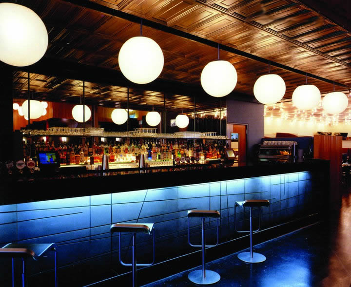
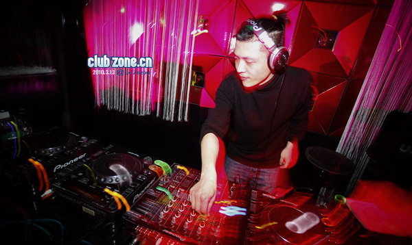
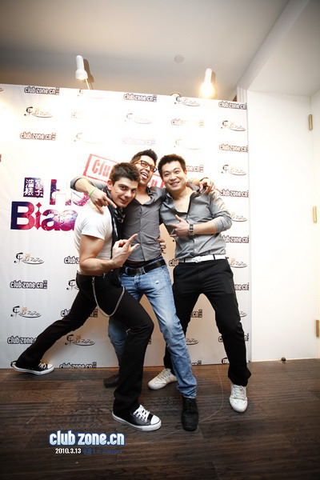

夜店的有趣和独一无二之处在于，它们是众所周知的“性市场”，在那里，男人们和女人们邂逅，勾三搭四地调情。2009年，利兹大，学心理学系的亨德利（Colin A.Hendrie）等人发表在《行为》杂志（Behaviour）上的一项研究，就探讨了在夜店发生搭讪行为中，哪些因素能够影响男人的搭讪。
研究者在利兹一家叫做“Majestyk`s`”的夜店里进行了调查，他们挑选了一个能俯瞰整个舞池的包厢，来观察跳舞的男女们。一个经过训练的观察者坐在包厢里，观察下边男女们出双入对和搭讪跳舞，其中一个主要项目是观察某个姑娘，统计她被男人搭讪的次数。
为了确定哪些因素能影响男人的选择，研究者还设计了一系列评估标准来评价夜店里姑娘们的着装和舞姿。在着装方面，研究者考察了姑娘着装的暴露程度，包括总的暴露程度，胸部暴露程度，以及服装的松紧程度（紧身还是宽松）。而在舞姿方面，研究者们则根据姑娘们舞步的奔放和挑逗程度进行了分级。
那么，这项研究到底得出了那些结论呢？
研究者发现，在某一个周六晚上进入夜店的1014名男女中，男女结伴而来的只占总人数19.3%。而在其他的三个观测日，研究者发现，分别有98对、104对和49对男女进入了夜店，而出去的时候，这个数字变成了148对、161对和80对。可见对于那些求交往的人来说，来说夜店恐怕是个勾搭成双的好场所。
在126次搭讪中，105次是男对女发起的。这倒不奇怪，男人本来就该是主动的一方嘛。值得称道的倒是那21位反过来搭讪男生的女性。接下来是重点部分，那就是姑娘的穿着和舞姿会对男人的搭讪有何影响。研究人员用统计学方法对各个因素对搭讪的影响进行了分析，发现男人对穿着紧身衣服的姑娘更感兴趣，而且有意思的是，来夜店姑娘们，没有一个上下身同时穿宽松的衣服的。另外那些衣着暴露（但没有暴露超过50%的）、露出胸部面积更大的（但没有完全暴露的，也没有露出乳头的）姑娘，理所当然地受到了前来搭讪的男人们的重点照顾。看来，男人通常会把暴露的衣着视为性信号。（编者按：本段前边括弧里的说明均为研究论文原文，不是编辑加的哦）
从舞姿方面来看，那些跳舞过程中极具暗示和性爱动作的姑娘，也更容易被搭讪。耐着性子看完了上边那些地球人都知道的，现在说说唯一你可能不清楚的。那就是衣着和舞姿传达出来的信号对男人的影响程度。在这次的研究中， 20%衣着暴露+舞姿奔放的姑娘就吸引到了50%前来搭讪的男人！
-- 转自果壳性情
此处显示系列标题

夜店--众所周知的“性市场”



谁更容易被搭讪



谁更容易被搭讪